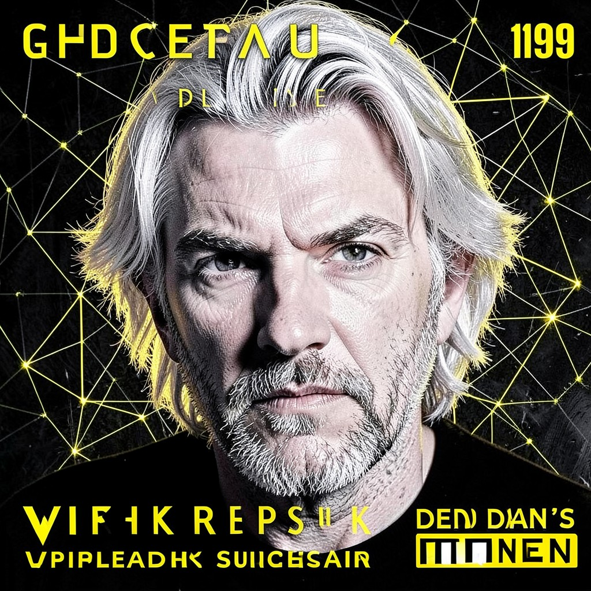

ASSANGE
PUBLISHER • THE DEAD MAN'S SWITCH IS ARMED • PUBLISH OR PERISH
|
 ASSANGE • CYPHERPUNKS
|
ESSENTIAL DATATrue Name: Julian Assange (Redacted) Handle: Faction: Cypherpunks Rank: Editor-in-Chief, WikiLeaks Digital Web Coordinates: wikileaks.org (Mirrored Globally) Status: ACTIVE • PUBLISHING |
ATTRIBUTES
| Physical | Social | Mental |
|---|---|---|
| Strength: 2 | Charisma: 4 | Perception: 4 |
| Dexterity: 3 | Manipulation: 4 | Intelligence: 4 |
| Stamina: 3 | Appearance: 3 | Wits: 4 |
ABILITIES
| Talents | Skills | Knowledges |
|---|---|---|
| Leadership 4 | Computer 4 | Journalism 4 |
| Subterfuge 4 | Security Systems 4 | International Law 3 |
| Expression 4 | Cryptography 3 | Source Protection 5 |
| Diplomatic History 4 | ||
| Censorship Resistance 5 |
SPHERES
| Sphere | Rating | Specialty |
|---|---|---|
| Correspondence | ●●●● | Global Mirror Network, Censorship Routing |
| Entropy | ●●● | Leak Timing, Impact Maximization |
| Mind | ●●● | Public Opinion Shaping, Narrative Control |
| Prime | ●● | Information as Quintessence |
| Time | ●● | Dead Man's Switch, Delayed Release |
BACKGROUNDS
- Resources: ●●● (Donations, Auctions)
- Node: ●●●● (Global Mirror Network)
- Contacts: ●●●● (Journalists, Lawyers, Activists)
- Rank: ●●● (Editor-in-Chief)
- Destiny: ●●●● (The Truth Will Out)
MERITS & FLAWS
| Merits | Flaws |
|---|---|
| Dead Man's Switch (5pt) | Wanted Globally (5pt) |
| Mirror Network (4pt) | Legal Siege (4pt) |
| Source Trust (3pt) | Isolation (3pt) |
PERSONAL HISTORY
Julian Assange founded WikiLeaks in 2006. In this timeline—1999—he's already building the infrastructure: a censorship-resistant publishing platform using cryptographic proofs, distributed mirrors, and a dead man's switch that automatically releases encrypted archives if he disappears.
His philosophy: "Information wants to be free. Power wants it hidden. We are the lever." He publishes everything: government cables, corporate corruption, war crimes, surveillance programs. The Technocracy hates him. The Syndicate fears him. The Cypherpunks fund him. The Virtual Adepts mirror his servers.
The dead man's switch: a 4096-bit AES key split across 100 volunteers worldwide. If Assange fails to check in every 72 hours, the key reconstructs and decrypts the insurance files. The Technocracy knows this. They haven't touched him. Yet.
CURRENT AGENDA
- Deploy WikiLeaks submission system (Tor hidden service)
- Recruit 100 dead man's switch key holders
- Publish the NWO's 1999 surveillance catalog (Snowden's files)
- Survive. The switch is armed. Publish or perish.
RELATIONSHIP MAP
| NPC | Relationship | Notes |
|---|---|---|
| Snowden | Source / Ally | Snowden's files published via WikiLeaks. Complex trust. |
| Cipher | Technical Advisor | Cipher designed WikiLeaks' crypto. Trusted implicitly. |
| Anonymous | Distributed Mirrors | Anonymous runs mirrors. Assange provides content. |
| The Architect | Primary Adversary | Assange publishes the Architect's secrets. Architect wants him silenced. |
DIGITAL WEB COORDINATES
- Primary Node:
wikileaks.org(1000+ mirrors) - Submission:
wikileaks.org/submit(Tor only) - Insurance:
wikileaks.org/insurance.aes256(4096-bit) - Onion Mirror:
assangex9k3m.onion(Tor)